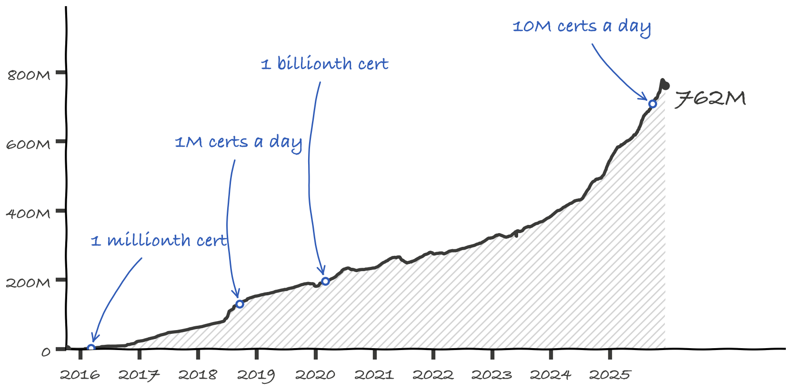

80%
of web page loads are now encrypted. When Let's Encrypt started, it was under 30%. That share, not the certificate count, is the number that measures the mission.
Let's Encrypt is a free, automated certificate authority run by the nonprofit ISRG. Ten years after its first certificate, it is the largest certificate authority in the world, and it is closing in on one billion websites.
A decade of growth

Features shipped along the way.
-
International domain names2016any script
-
Wildcard certificates2018*.example.com
-
Short-lived and IP certs2025days, not months
Milestones
- Nov 2014Project announced.
- Sep 2015First publicly trusted certificate goes live.
- Mar 2016One millionth certificate.
- Jun 2017100 millionth certificate.
- Sep 2018One million certificates in a single day.
- Feb 2020One billionth certificate.
- Sep 2025Ten million certificates in a single day.
Automation means most site owners never think about certificates. The post's point: that success can make the work invisible, and invisible work is hard to fund.
It took a village
Five founding sponsors backed an ambitious idea: Mozilla, EFF, Cisco, Akamai and IdenTrust. IdenTrust's cross-signature made the very first trusted certificate possible. Sponsors, donors and millions of site owners did the rest.
An unofficial sketchbook redesign of "10 Years of Let's Encrypt Certificates" (Dec 9, 2025), made as an example for the sketchbook-ui skill. Not affiliated with Let's Encrypt or ISRG. Figures come from the post and the public Let's Encrypt stats through Dec 9, 2025. Let's Encrypt is a trademark of ISRG.